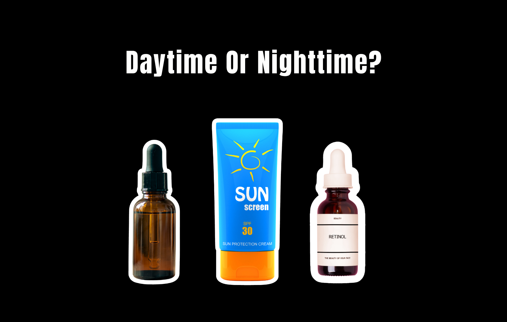

There may be a strange idea in skincare that if a product is good for your face, you should probably use more of it.
Day. Night. All the time.
The logic sounds harmless. If retinol is supposed to improve your skin, why not use more of it? If an exfoliating acid makes your skin smoother, why not apply it again in the morning? If a serum is expensive enough, surely it deserves two appearances a day.
Except skincare does not work that way. Skincare products are not created equal, and there are reasons for why people have daytime and nighttime routines for their skin.
Some products are designed around what your skin is exposed to during the day. Others make more sense when your skin is away from sunlight, makeup, sweat, and environmental exposure. And some ingredients can become irritating when you use them too aggressively, regardless of how expensive or “gentle” the bottle claims to be.
In fact, treating them like they are can be one of the easiest ways to turn a perfectly reasonable routine into an overtreated one.
Daytime Products
1. Sunscreen
Verdict: Daytime essential. Nighttime unnecessary.This is the obvious one, but somehow skincare routines still manage to make sunscreen complicated.
Sunscreen exists to protect your skin from ultraviolet radiation. That means it has a job when you are exposed to the sun — not while you are asleep in a dark bedroom.
The American Academy of Dermatology recommends a broad-spectrum sunscreen with SPF 30 or higher, and sunscreen should be the final step in your morning skincare routine. It should also be reapplied when appropriate, particularly during extended outdoor exposure.
So no, you do not need to put sunscreen on before bed just because the bottle says “daily.”
And you definitely do not need to layer a nighttime moisturizer with SPF over your regular moisturizer at 11 p.m. You are not protecting yourself from UV rays coming through your duvet. In fact, the water-resistant and UV filters in sunscreen can actually trap dirt and sebum if worn at night without proper removal.
The more important point is that sunscreen is not a treatment you use occasionally when you remember. It is protection that makes sense specifically in the daytime.
2. Vitamin C Serum
Verdict: Best suited to the morning, not night-forbiddenVitamin C is one of those ingredients that has become almost impossible to talk about without saying “brightening,” “glowing,” and “antioxidant” approximately 14 times.
But there is a legitimate reason it makes sense in a morning routine.
Vitamin C is an antioxidant. During the day, your skin is exposed to environmental stressors, including UV radiation and pollution. Vitamin C can provide antioxidant support alongside — not instead of — sunscreen.
That last part matters.
Vitamin C does not replace SPF. It does not turn a serum into sunscreen. And applying more vitamin C does not compensate for skipping sun protection.
The AAD recognizes vitamin C as an antioxidant used in skincare for benefits including brightening and supporting firmer-looking skin.
Could you use vitamin C at night?
Yes.
There is nothing inherently wrong with doing so, depending on the formula and your skin’s tolerance. But if you are deciding where it earns a spot, morning makes intuitive sense because you are pairing an antioxidant with your daytime protection.
The marketing version
Vitamin C gives you glow.
The more useful version
Vitamin C can provide antioxidant support, while sunscreen handles the much bigger job of protecting your skin from UV.
3. Antioxidant Serums
Verdict: Primarily a daytime categoryVitamin E, ferulic acid, green tea extract and other antioxidant ingredients frequently show up in morning serums for a reason: antioxidants are useful when your skin is dealing with environmental exposure.
But this is where skincare marketing likes to turn a reasonable concept into a shopping spree.
You do not necessarily need an antioxidant serum, antioxidant mist, antioxidant moisturizer, antioxidant eye cream and antioxidant primer.
A well-formulated antioxidant serum can make sense in the morning, particularly when paired with sunscreen. But more antioxidant products do not automatically equal more protection or better skin.
And unlike sunscreen, antioxidant skincare is not a substitute for actual UV protection.
Nighttime Products
1. Retinoids and Retinol
Verdict: Night. This one actually has a reason.Retinoids are probably the clearest example of a product that belongs in the nighttime conversation.
Retinoids can help with acne, pigmentation, texture and signs of skin aging. But they can also irritate the skin and make it more sensitive to sunlight.
The American Academy of Dermatology specifically recommends using retinoids at night and protecting your skin from the sun during the day. Dermatologists also commonly recommend starting slowly — sometimes every other night — rather than immediately applying a retinoid every night.
This is where the beauty industry’s “more is more” mentality becomes particularly unhelpful.
- Retinol is not a cleanser.
- You do not need to use it twice a day.
- You do not need to graduate to the strongest formula you can find.
- And peeling is not proof that it is working.
Retinoids can irritate skin, and irritation itself can create problems, including worsening the appearance of dark marks in some people. The AAD recommends using the least-intense formula appropriate for your needs and increasing frequency gradually.
What to look for
A retinoid appropriate for your skin and concern.
What to stop doing
Treating irritation like a progress bar.
2. Strong Chemical Exfoliants
Verdict: Night is usually smarter for leave-on acidsAHAs and BHAs have become so normal in skincare that exfoliating acid is now casually treated like moisturizer.
It is not.
Glycolic acid. Lactic acid. Salicylic acid. They can be useful ingredients, but they are still active treatments that can irritate the skin when overused.
The AAD warns that exfoliation can cause redness, irritation and breakouts when done incorrectly. It also notes that products such as retinoids, retinol and benzoyl peroxide can already make skin more sensitive or prone to peeling, meaning combining them with exfoliation can worsen irritation.
This is why nighttime is often the more sensible place for stronger exfoliating products.
You are not immediately heading outside afterward. You can follow the treatment with moisturizer. And you can avoid turning your morning routine into a chemistry experiment involving five potentially irritating actives before 8 a.m.
That does not mean every acid is legally forbidden before sunrise. Some exfoliating products are formulated for daytime use.
It means that if you are using a strong leave-on exfoliant, nighttime is generally the easier environment in which to manage it.
What to look for
One exfoliating active, used at a frequency your skin can tolerate.
What to stop doing
Exfoliating because your skin feels like it needs to be “reset.”
3. Prescription or Strong Pigment Treatments
Verdict: Follow the product’s specific instructionsThis is the category where “nighttime skincare” becomes less about beauty trends and more about medication instructions.
Certain prescription treatments for pigmentation, acne or other skin concerns may be directed for evening use because of irritation, sun sensitivity, stability, or how they fit into a broader treatment plan.
Hydroquinone is a good example of why consumers should not blindly copy an ingredient from TikTok. The FDA states that over-the-counter skin-lightening products containing hydroquinone are not legally marketed in the United States and advises consumers to consult a healthcare provider about treatment options.
In other words, “I saw someone use this for dark spots” is not a treatment plan.
If you are using a prescription-strength or dermatologist-directed product, follow the instructions you were given rather than assuming you should use it morning and night because more applications must mean faster results.
Often, they don’t.
The Real Problem Is Not Morning vs. Night
The biggest skincare mistake is not necessarily using the “wrong” product at the wrong time.
It is assuming that every product needs to be used twice a day.
Skincare marketing has trained consumers to think in terms of addition:
- Dry skin? Add a serum.
- Fine lines? Add retinol.
- Dullness? Add an acid.
- Redness? Add another serum.
- Sun damage? Add vitamin C.
Then the skin becomes irritated from all the products, so you buy a barrier-repair serum to fix the damage caused by the other serums.
Congratulations. You have created your own skincare ecosystem.
Dermatologists generally recommend focusing on a small number of products and introducing treatments based on your specific concern. The AAD also warns that using multiple anti-aging products can irritate skin and make signs of aging more noticeable.
The better question is not:
“Can I use this twice a day?”
It is:
Usually, the answer is no.
The Bottom Line
Not every skincare product deserves a morning-and-night shift.
Sunscreen has a daytime job. Retinoids are generally better suited to nighttime. Strong exfoliating treatments often make more sense at night, while antioxidant serums can fit naturally into the morning alongside sun protection.
But there is an important distinction between “nighttime is preferred” and “this ingredient becomes dangerous when the sun comes up.”
Skincare is not that simple.
The formula matters. The concentration matters. Your skin matters. The product’s instructions matter.
And if your routine requires an AM spreadsheet, a PM spreadsheet and an alarm reminding you which active you are allowed to use tonight, it might be time to admit something:
Your skin probably did not ask for all of that.
It asked for sunscreen.
And maybe a little peace and quiet.
The Beauty Insider Take
The AM/PM split on a box is rarely a formulation decision. It is a merchandising one. Two products, two price points, two places in your cabinet — from a single formula base that was never split down the middle in the lab.
Watch which direction the instructions point. When a brand has a reason for nighttime, it tells you the reason: photosensitivity, irritation, sun sensitivity. When it does not have a reason, it just says “use morning and night” and lets you assume the frequency is the benefit. Vague usage directions almost always favor the brand, because the faster you empty the bottle the sooner you replace it.
The other tell is a “night cream” whose ingredient list looks like the day cream minus the SPF and plus a heavier occlusive. That is not a different treatment. That is the same moisturizer wearing a different label, and you are being sold the schedule rather than the science.
Read the directions as the product’s actual claim. If nighttime is specified with a reason, respect it. If it is specified without one, you are allowed to ask why — and to decide your skin does not need a second application just because the packaging left room for one.
Sources: American Academy of Dermatology — sunscreen guidance, retinoid use and application timing, exfoliation safety, vitamin C and antioxidants in skincare, and cautions on combining multiple anti-aging products; U.S. Food and Drug Administration — consumer guidance on over-the-counter skin-lightening products containing hydroquinone.